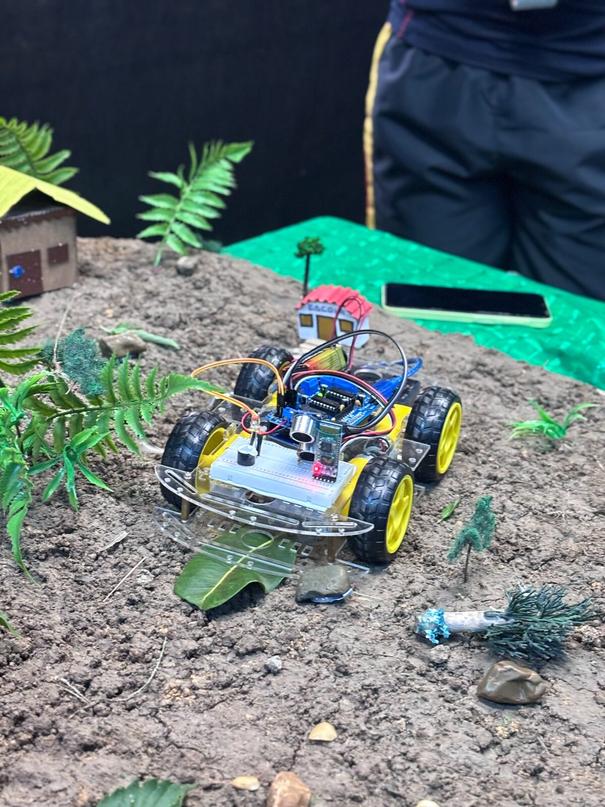

Projeto Arara
Curupira é o robô de reconhecimento e resgate do Projeto Arara: sensores inteligentes mapeiam o terreno pós-enchente na Amazônia e apontam rotas seguras para equipes de resgate e comunidades ribeirinhas.

O Curupira é um robô desenvolvido para atuar em regiões atingidas por enchentes na Amazônia. Após o recuo das águas, diversos obstáculos permanecem escondidos no solo — troncos, buracos, destroços, fios elétricos e resíduos perigosos.
O robô utiliza sensores inteligentes para identificar esses riscos e auxiliar equipes de resgate a encontrarem rotas seguras, reduzindo o perigo em terrenos que ninguém consegue avaliar a olho nu.
Conheça a missãoMapeia áreas devastadas pelas cheias, identificando locais de difícil acesso e riscos para moradores e equipes de emergência — sobretudo em comunidades ribeirinhas isoladas.
Sensores infravermelhos detectam obstáculos, buracos e destroços, transmitindo informações em tempo real para a central de operações.
Indica os caminhos mais seguros durante operações de reconhecimento, reduzindo o risco de acidentes e agilizando o atendimento às vítimas.
Registros da montagem do robô e da maquete que simula uma comunidade ribeirinha atingida pela cheia.
Cinco etapas em sequência, do momento em que o Curupira entra em campo até o apoio direto às equipes de resgate.
O robô percorre a área alagada em busca de qualquer alteração no solo.
Sensores identificam obstáculos escondidos que ficaram após o recuo das águas.
Com os dados coletados, o sistema define o caminho de menor risco.
As informações chegam à central de operações assim que são captadas.
Resgatistas recebem rotas seguras para agir com mais rapidez e menos risco.
Teste em bancada do chassi motorizado, do sensor ultrassônico e da resposta a obstáculos.
O Curupira reduz o risco enfrentado pelas equipes de resgate, acelera a localização de vítimas e identifica áreas inseguras — contribuindo para a reconstrução das comunidades atingidas pelas enchentes.
Além do resgate imediato, o robô gera mapas ambientais que auxiliam órgãos públicos no planejamento das ações de recuperação da região.